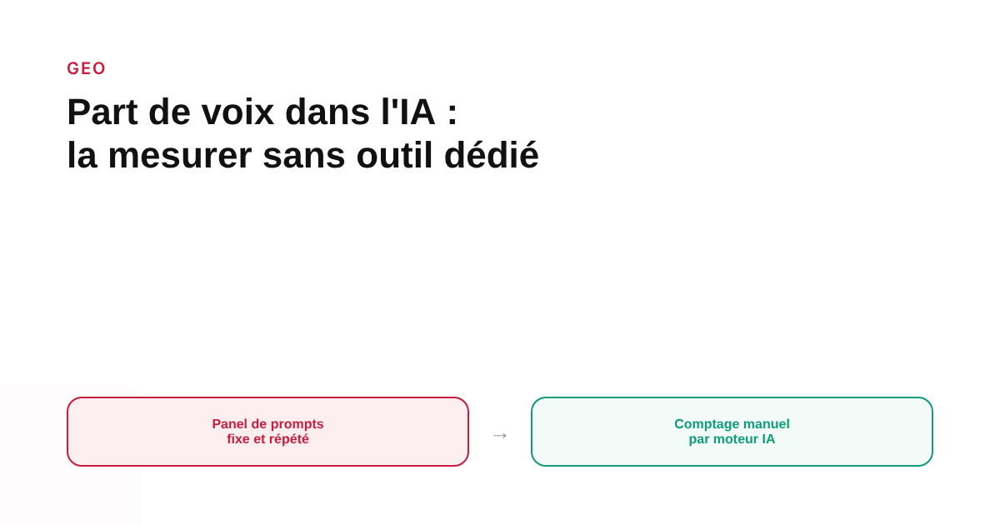
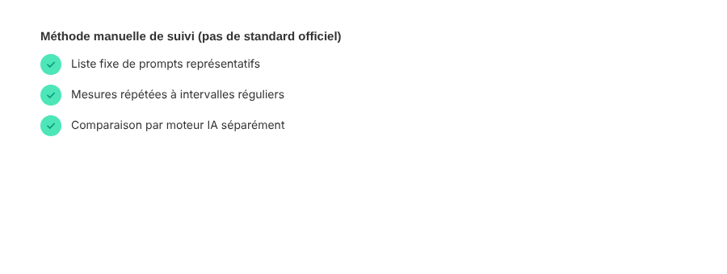

Part de voix dans les réponses IA : comment la mesurer sans outil dédié
Contrairement à la part de voix publicitaire classique, qu'aucun organisme ne standardise officiellement non plus mais que les plateformes mesurent au moins elles-mêmes, la part de voix dans les réponses des IA génératives n'a ni définition officielle ni méthode validée. Voici la méthode manuelle que les praticiens du GEO utilisent en attendant mieux — et ses angles morts.

Avant toute chose, une clarification nécessaire : il n'existe aujourd'hui aucune définition officielle, aucun organisme de mesure et aucune méthodologie standardisée pour la part de voix d'une marque dans les réponses des IA génératives. Ce que les praticiens du GEO appellent « part de voix IA » est une métrique construite par le secteur lui-même, essentiellement par des éditeurs d'outils qui la vendent comme fonctionnalité. La méthode décrite ici est la version manuelle, reproductible sans outil payant — avec ses limites assumées.
La définition de travail la plus répandue
La définition qui revient le plus souvent dans les ressources du secteur est simple : la part de voix IA d'une marque est la proportion de ses propres mentions par rapport au total des mentions de toutes les marques présentes, sur un ensemble fixe de prompts. Un exemple de calcul souvent cité dans les guides pratiques : si une marque et trois concurrents totalisent 40 mentions sur un panel de prompts, et que 14 de ces mentions concernent cette marque, sa part de voix ressort à 35 %. Certaines ressources distinguent aussi la « part de citation » — le pourcentage de réponses qui citent effectivement le domaine d'une marque comme source — de la simple mention du nom sans lien. Les deux mesurent des choses différentes et ne doivent pas être confondues.
La méthode manuelle, étape par étape
Première étape : construire un panel de prompts fixe et représentatif des questions que se posent réellement les clients potentiels dans sa catégorie — pas des requêtes contenant déjà le nom de la marque, qui biaiseraient artificiellement le résultat. Deuxième étape : poser ce même panel, à intervalles réguliers, sur chaque moteur IA pertinent séparément (ChatGPT, Perplexity, Google AI Mode, Gemini). Troisième étape : noter pour chaque réponse si la marque est mentionnée, si elle est citée comme source, et quelles marques concurrentes apparaissent. Quatrième étape : calculer le ratio mentions propres / mentions totales, par moteur et non en moyenne globale.

Pourquoi une seule mesure ne suffit jamais
Les réponses d'un modèle génératif varient d'un passage à l'autre, même pour un prompt rigoureusement identique — contrairement à un classement Google qui reste stable entre deux rafraîchissements de page pour un même utilisateur. Les ressources du secteur recommandent donc de traiter la part de voix IA comme une tendance mesurée sur de nombreux passages répétés, pas comme une valeur figée issue d'un seul test. Un panel trop petit (quelques prompts) ou mesuré une seule fois donne un chiffre qui peut varier fortement sans que rien n'ait réellement changé pour la marque.
L'angle mort qu'aucune méthode manuelle ne résout vraiment
Même bien exécutée, cette méthode reste un échantillonnage approximatif d'un système opaque : on ne sait pas pourquoi un modèle mentionne une marque plutôt qu'une autre dans un cas donné, seulement qu'il le fait ou non à un instant précis. Les écarts observés entre deux éditeurs d'outils GEO mesurant la même marque peuvent être significatifs, simplement parce que leurs panels de prompts et leurs définitions de « mention » diffèrent. Ce flou méthodologique doit être assumé : la part de voix IA, mesurée à la main ou via un outil, reste une mesure directionnelle utile pour suivre une tendance dans le temps, pas un indicateur de précision comparable à une part de marché Google Ads.
Ce qu'il est raisonnable d'en faire
Utiliser cette méthode pour suivre l'évolution de sa propre marque dans le temps, sur un panel de prompts qu'on garde identique d'une mesure à l'autre, a plus de valeur que de comparer son chiffre brut à celui d'un concurrent mesuré par une méthode différente. C'est un outil de suivi relatif, pas un classement absolu — et il doit être présenté comme tel à un client ou à une direction, sous peine de donner une fausse impression de précision à un chiffre qui n'en a pas.
FAQ
Comment calculer sa part de voix dans les réponses IA ?
La méthode manuelle consiste à poser un panel fixe de prompts représentatifs de sa catégorie à un ou plusieurs modèles, puis à compter combien de fois sa marque est mentionnée ou citée par rapport au total des mentions de toutes les marques présentes dans les réponses. Le résultat est un pourcentage, mais il reste approximatif.
Combien de prompts faut-il tester pour un résultat fiable ?
Il n'existe pas de nombre officiellement validé. Les praticiens recommandent un panel large et stable, de l'ordre de plusieurs dizaines de prompts testés régulièrement, plutôt qu'une mesure ponctuelle sur quelques requêtes — les réponses des modèles varient d'une génération à l'autre, même pour un prompt identique.
La part de voix IA se mesure-t-elle de la même façon sur tous les modèles ?
Non. Une marque peut être dominante sur un modèle et absente sur un autre. La mesure doit donc couvrir plusieurs moteurs (ChatGPT, Perplexity, Google AI Mode, Gemini...) séparément plutôt qu'une moyenne unique, sous peine de masquer des écarts importants.
Envie d'un suivi structuré de votre présence dans les réponses IA ?
Pour aller plus loin, voir la page GEO, et l'article Mesurer le ROI du GEO.
Pour continuer sur ce sujet.